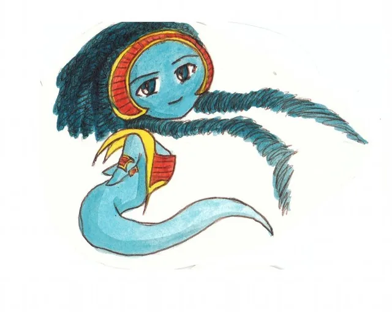
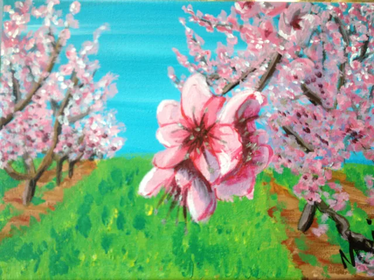
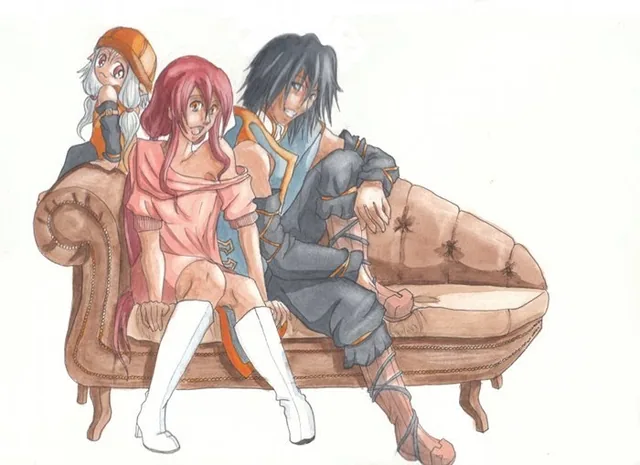
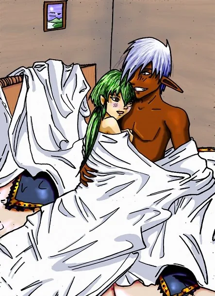
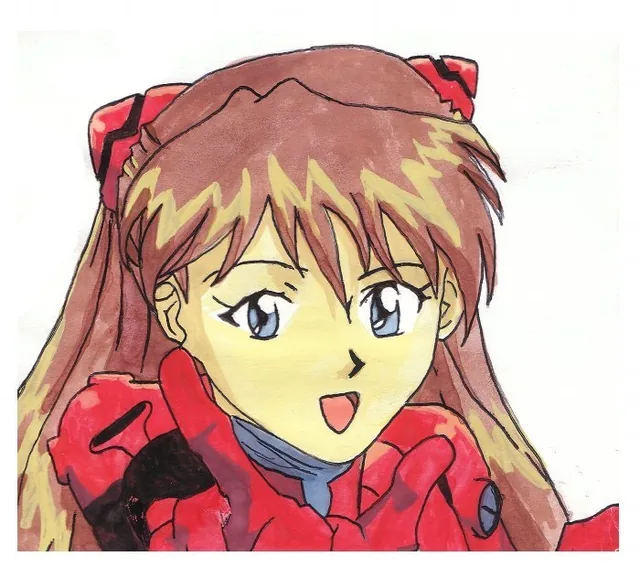
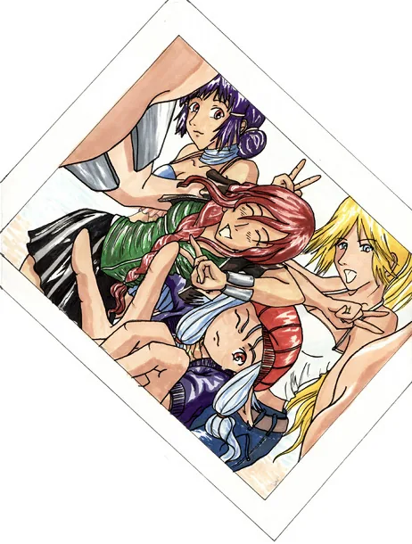

Aelysse
Illustrations et recherches autour des personnages de la série.
Un univers de Sandrine · Haudryane
Explorez les dessins, peintures, paysages, personnages miniatures et inspirations de Sandrine, créatrice des Contes d’Aelysse.
Illustrations et recherches autour des personnages de la série.

Personnages miniatures et dessins au format chibi.

Paysages et scènes peints par Sandrine.

Une sélection de peintures et de mises en couleur.

D’autres créations et essais de Sandrine.

Études et dessins inspirés d’autres univers.

Les premières créations et les dessins d’archives.